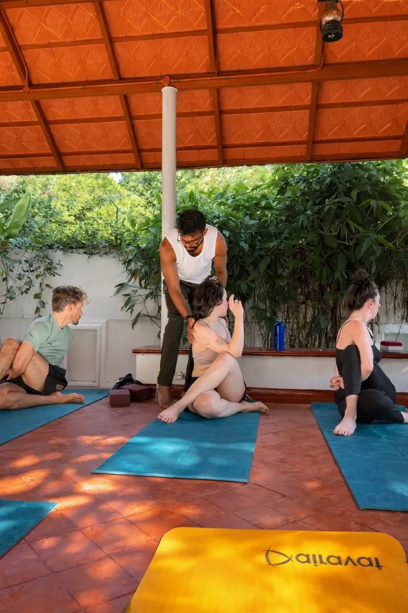

In short
The quickest and most pleasant way from Ernakulam to Fort Kochi is by water. The Kochi Water Metro from the High Court terminal takes about 20 minutes and costs ₹40 one way. The older government ferry from the main boat jetty is slower and costs only a few rupees. By road it is 35 to 40 minutes, longer at rush hour. For a 7:30 am class, take a taxi or the first ferry; for the 3:30 pm class, the Water Metro is ideal.
Kochi is not one place but several, spread across a mainland and a scatter of islands. Ernakulam is the modern city on the mainland, with the railway stations, the malls, the Metro and most of the hotels. Fort Kochi is the old seaside quarter on the far side of the harbour, where the fishing nets, the heritage streets and our school are.
Many people who search for a yoga class in Kochi are staying in Ernakulam and do not realise how easy the crossing is. It is often quicker by boat than by car.
By Kochi Water Metro
The Water Metro is a fleet of modern, air-conditioned electric boats. The High Court to Fort Kochi route has run since 2024 and is the best way across for most visitors.
- Where to board: the High Court Water Metro terminal on Marine Drive, Ernakulam.
- Where you arrive: the Fort Kochi terminal, close to the waterfront and the main jetty.
- Journey time: about 20 minutes.
- Fare: ₹40 one way. Pay at the counter or with the Kochi1 card or app.
- Frequency: roughly every 15 to 20 minutes at busy times, less often early and late. Boats run through the day into the evening; check the first and last departures on the day, as they have changed since the service opened.
The crossing itself is a small sightseeing trip: container ships, the naval base, Bolgatty and Willingdon islands, and the fishing nets as you come in.
By government ferry
Before the Water Metro there was the State Water Transport Department ferry, and it still runs. It is slower, simpler and extremely cheap, and many people who live here prefer it.
- Where to board: the main boat jetty in Ernakulam, near Park Avenue and Marine Drive.
- Where you arrive: the Fort Kochi jetty, sometimes after a stop on the way.
- Journey time: about 20 to 25 minutes.
- Fare: a few rupees, bought at the counter before boarding.
- Frequency: roughly every half hour, from early morning (around 6 am) to about 9 pm.
The boats are old and open-sided and can be crowded at commuter times. They are also the only way across the water before the Water Metro starts in the morning.
By road
Fort Kochi is about 12 km from central Ernakulam by road, over the bridges via Willingdon Island and Thoppumpady.
- Taxi or app cab: Uber and Ola both operate in Kochi, including app-booked auto-rickshaws. Around 35 to 40 minutes in normal traffic, much more in the evening rush.
- Auto-rickshaw: fine for the trip, but agree the fare before you set off or use an app.
- Bus: private and KSRTC buses run from Ernakulam to Fort Kochi all day. Cheap and slow; allow 45 minutes or more.
The options compared
| Option | Time | Cost | Best for |
|---|---|---|---|
| Water Metro | About 20 min | ₹40 | Most daytime trips; comfort |
| Government ferry | 20–25 min | A few rupees | Early mornings; budget; local colour |
| Taxi or app cab | 35–40 min+ | Several hundred rupees | Luggage; before dawn; late at night |
| Bus | 45 min+ | Very cheap | Tight budgets, no hurry |
Fares and timings in Kochi change. Treat the figures here as a guide and check on the day.
Getting to a yoga class from Ernakulam
Our school is in Chirattapalam, in the residential lanes of Fort Kochi, about five minutes by auto-rickshaw from the jetties. Every auto driver in Fort Kochi knows Chirattapalam.
For the 7:30 am class
This is the one that needs planning. Either take one of the early government ferries, aiming to land in Fort Kochi by about 7:10, then an auto to the school; or book a taxi or app cab for about 6:45 am, when the roads are still clear. Some mornings the class is held at Secret Garden, an open garden nearby, from 8:00 to 9:30, so always message us the evening before and we will tell you where to come.
For the 3:30 pm class
Easy. Take the Water Metro from High Court at around 2:45, pick up an auto at the Fort Kochi end, and you will be on your mat in good time. The class ends at 5:30, leaving time for the sunset at the fishing nets before the boat home.

Should you stay in Ernakulam or Fort Kochi?
If you are in Kochi for work, shopping or an early train, Ernakulam makes sense. If you are here to see the city, practise yoga or slow down, stay in Fort Kochi: the atmosphere is there, and a 7:30 class becomes a short walk rather than a trip. Our guide to where to stay in Fort Kochi compares the areas.
Cross the water for a class
Traditional Hatha Yoga every day, 7:30–9:30 am or 3:30–5:30 pm, five minutes from the Fort Kochi jetties. ₹700 a class. No booking needed. Message us the evening before a morning class.
Coming from further away? Kochi airport to Fort Kochi covers the journey from the airport, and yoga near Mattancherry and West Kochi is for anyone living on this side of the harbour.
Common questions
How long does it take to get from Ernakulam to Fort Kochi?
About 20 minutes by Water Metro or 20 to 25 minutes by government ferry. By road it takes 35 to 40 minutes in normal traffic and considerably longer at rush hour.
How much is the Water Metro from High Court to Fort Kochi?
The one-way fare is ₹40. Tickets are sold at the terminal counter, and the Kochi1 card and app can also be used.
Where does the ferry to Fort Kochi leave from in Ernakulam?
The Water Metro leaves from the High Court terminal on Marine Drive. The government ferry leaves from the main boat jetty nearby. Both arrive close to the Fort Kochi waterfront.
Can I get to a 7:30 am yoga class in Fort Kochi from Ernakulam?
Yes. Take an early government ferry to land by about 7:10, or a taxi at around 6:45 am, then an auto-rickshaw to Chirattapalam. Message the school the evening before, as some mornings the class is held at a nearby garden from 8:00.
Do Uber and Ola work in Fort Kochi?
Yes. Both operate in Kochi, including app-booked auto-rickshaws, and Fort Kochi is a common destination. Local autos are also easy to find; agree the fare before setting off.

Known to his students as Achu, Aksharanand trained in the Sivananda tradition and holds an Advanced Teacher Training Certificate. He has taught Hatha Yoga, pranayama, meditation and Vedanta philosophy in Fort Kochi for over fifteen years, across more than 5,000 group classes and seventy international teacher training batches.
More about Achu and the school · Book a class or ask a question